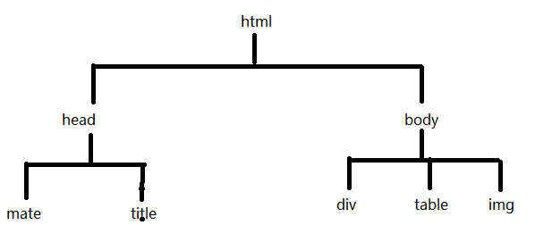

复习
window---document event location history navigator screen
window对象方法：
alert() confirm() prompt（）
open()
setInterval()
setTimeout()
document对象 ：查找页面元素
location ： href 获取或设置路径
2、dom 操作
什么是dom？ document object model 文档对象模型

dom模型中： 每一个元素都是一个节点
html 叫做根节点
head、body、div 等 元素节点
元素节点的内容称为 文本节点
元素节点的属性称为 属性节点
一切都是节点
3、节点关系
parentNode 父节点
childNodes 孩子节点 获取元素节点和文本节点
children 孩子节点 获取元素节点
firstElementChild 第一个孩子节点 （带有Element的都是高版本浏览器识别） firstChild
lastElementChild 最后一个孩子节点
nextElementSibling 下一个兄弟节点
previousElementSibling 前一个兄弟节点
页面对象.上面关系词 ---> 找到相关的页面元素
tagName 或 nodeName 获取节点的名
nodeType 节点类型 因为节点有三种类型，所以nodeType的值 有三种情况
元素节点 nodeType 值 1
文本节点 nodeType 值 3
属性节点 nodeType 值 2
思考： 页面中三行四列的表格，点击表格的某一个单元格，控制该行的背景颜色（其余行没有颜色），并且 被点击的单元格中添加一个随机1--10的数字
4、节点的动态操作
创建元素节点 ： document.createElement("节点名称");
创建文本节点 ： document.createTextNode("文本节点内容");
添加节点 ： appendChild(节点名称)
用法： 父节点.appendChild(子元素)
insertBefore()
用法：
父节点.insertBefore(要添加的子节点,参照节点) 向参照节点的前面添加一个新元素
如果参照节点为null，就实现了appendChild效果
一定要写满两个参数
注意：为动态创建的元素添加事件时，添加事件的代码需要在元素创建完成后实现，也就是添加事件的代码和创建元素的代码在同一个函数体内部。
如果添加事件的代码写在函数体外部，需要通过事件委托来实现。
删除节点 ： removeChild() remove()
父节点.removeChild(要删除的子节点)
要删除的节点.remove();
5、节点克隆
cloneNode([true]) 参数如果为true，表示要克隆元素本身及其内容 深度克隆
如果参数为空，紧克隆该元素本身 浅克隆
用法： 对象.cloneNode();
6、节点属性的动态操作
getAttribute() 获取属性值 （可以获取自定义属性的值） 用法 ： 对象.getAttribute("属性名")
setAttribute() 设置属性值 用法： 对象.setAttribute("属性","值");
removeAttribute() 删除属性值 用法 ： 对象.removeAttribute("属性名");
思考练习 ：
网页换肤
星星点点 ：页面加载 页面上出现大小不同 位置不同的图片，点击某个星星 图片消失